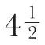
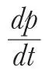
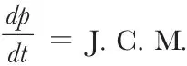

中文
中文P. G. Tait
Editor’s Note
James Clerk Maxwell died in November 1879. In this essay four months later, Scottish physicist Peter Guthrie Tait, who had known Maxwell from childhood, paid tribute to his accomplishments. Maxwell was producing influential, original work before the age of twenty. In 1864 he published a landmark paper giving the first complete statement of his theory of electricity and magnetism. It explained electromagnetic phenomena without recourse to action at a distance, and provided a unified view of what light is. Guthrie notes that the facility of Maxwell’s thinking did not always translate into effective lectures. While the treatises he wrote were models of clarity, his extemporaneous lectures gave free rein to his imagination in a way that taxed his audiences. 中文
AT the instance of Sir W. Thomson, Mr. Lockyer, and others I proceed to give an account of Clerk Maxwell’s work, necessarily brief, but I hope sufficient to let even the non-mathematical reader see how very great were his contributions to modern science. I have the less hesitation in undertaking this work that I have been intimately acquainted with him since we were schoolboys together. 中文
If the title of mathematician be restricted (as it too commonly is) to those who possess peculiarly ready mastery over symbols, whether they try to understand the significance of each step or no, Clerk Maxwell was not, and certainly never attempted to be, in the foremost rank of mathematicians. He was slow in “writing out”, and avoided as far as he could the intricacies of analysis. He preferred always to have before him a geometrical or physical representation of the problem in which he was engaged, and to take all his steps with the aid of this: afterwards, when necessary, translating them into symbols. In the comparative paucity of symbols in many of his great papers, and in the way in which, when wanted, they seem to grow full-blown from pages of ordinary text, his writings resemble much those of Sir William Thomson, which in early life he had with great wisdom chosen as a model. 中文
There can be no doubt that in this habit, of constructing a mental representation of every problem, lay one of the chief secrets of his wonderful success as an investigator. To this were added an extraordinary power of penetration, and an altogether unusual amount of patient determination. The clearness of his mental vision was quite on a par with that of Faraday; and in this (the true) sense of the word he was a mathematician of the highest order. 中文
But the rapidity of his thinking, which he could not control, was such as to destroy, except for the very highest class of students, the value of his lectures. His books and his written addresses (always gone over twice in MS.) are models of clear and precise exposition; but his extempore lectures exhibited in a manner most aggravating to the listener the extraordinary fertility of his imagination. 中文
His original work was commenced at a very early age. His first printed paper, “On the Description of Oval Curves, and those having a Plurality of Foci”, was communicated for him by Prof. Forbes to the Royal Society of Edinburgh, and inserted in the “Proceedings” for 1846, before he reached his fifteenth year. He had then been taught only a book or two of Euclid, and the merest elements of Algebra. Closely connected with this are three unprinted papers, of which I have copies (taken in the same year), on “Descartes’ Ovals”, “The Meloid and Apioid”, and “Trifocal Curves”. All of these, which are drawn up in strict geometrical form and divided into consecutive propositions, are devoted to the properties of plane curves whose equations are of the form
mr + nr' + pr" + … = constant
r, r', r", &c., being the distances of a point on the curve from given fixed points, and m, n, p, &c., mere numbers. Maxwell gives a perfectly general method of tracing all such curves by means of a flexible and inextensible cord. When there are but two terms, if m and n have the same sign we have the ordinary Descartes’ Ovals, if their signs be different we have what Maxwell called the Meloid and the Apioid. In each case a simple geometrical method is given for drawing a tangent at any point, and some of the other properties of the curves are elegantly treated. 中文
Clerk Maxwell spent the years 1847–1850 at the University of Edinburgh, without keeping the regular course for a degree. He was allowed to work during this period, without assistance or supervision, in the Laboratories of Natural Philosophy and of Chemistry: and he thus experimentally taught himself much which other men have to learn with great difficulty from lectures or books. His reading was very extensive. The records of the University Library show that he carried home for study, during these years, such books as Fourier’s Théorie de la Chaleur, Monge’s Géometrie Descriptive, Newton’s Optics, Willis’ Principles of Mechanism, Cauchy’s Calcul Différentiel, Taylor’s Scientific Memoirs, and others of a very high order. These were read through, not merely consulted. Unfortunately no list is kept of the books consulted in the Library. One result of this period of steady work consists in two elaborate papers, printed in the Transactions of the Royal Society of Edinburgh. The first (dated 1849) “On the Theory of Rolling Curves”, is a purely mathematical treatise, supplied with an immense collection of very elegant particular examples. The second (1850) is “On the Equilibrium of Elastic Solids”. Considering the age of the writer at the time, this is one of the most remarkable of his investigations. Maxwell reproduces in it, by means of a special set of assumptions, the equations already given by Stokes. He applies them to a number of very interesting cases, such as the torsion of a cylinder, the formation of the large mirror of a reflecting telescope by means of a partial vacuum at the back of a glass plate, and the theory of Örsted’s apparatus for the compression of water. But he also applies his equations to the calculation of the strains produced in a transparent plate by applying couples to cylinders which pass through it at right angles, and the study (by polarised light) of the doubly-refracting structure thus produced. He expresses himself as unable to explain the permanence of this structure when once produced in isinglass, gutta percha, and other bodies. He recurred to the subject twenty years later, and in 1873 communicated to the Royal Society his very beautiful discovery of the temporary double refraction produced by shearing in viscous liquids. 中文
During his undergraduateship in Cambridge he developed the germs of his future great work on “Electricity and Magnetism” (1873) in the form of a paper “On Faraday’s Lines of Force”, which was ultimately printed in 1856 in the “Trans. of the Cam. Phil. Soc.” He showed me the MS. of the greater part of it in 1853. It is a paper of great interest in itself, but extremely important as indicating the first steps to such a splendid result. His idea of a fluid, incompressible and without mass, but subject to a species of friction in space, was confessedly adopted from the analogy pointed out by Thomson in 1843 between the steady flow of heat and the phenomena of statical electricity. 中文
Other five papers on the same subject were communicated by him to the Philosophical Magazine in 1861–1862, under the title Physical Lines of Force. Then in 1864 appeared his great paper “On a Dynamical Theory of the Electromagnetic Field”. This was inserted in the Philosophical Transactions, and may be looked upon as the first complete statement of the theory developed in the treatise on Electricity and Magnetism. 中文
In recent years he came to the conclusion that such analogies as the conduction of heat, or the motion of the mass-less but incompressible fluid, depending as they do on Laplace’s equation, were best symbolised by the quaternion notation with Hamilton’s ▽ operator; and in consequence, in his work on electricity, he gives the expressions for all the more important physical quantities in their quaternion form, though without employing the calculus itself in their establishment. I have discussed in another place (Nature, vol. VII, p. 478) the various important discoveries in this remarkable work, which of itself is sufficient to secure for its author a foremost place among natural philosophers. I may here state that the main object of the work is to do away with “action at a distance,” so far at least as electrical and magnetic forces are concerned, and to explain these by means of stresses and motions of the medium which is required to account for the phenomena of light. Maxwell has shown that, on this hypothesis, the velocity of light is the ratio of the electro-magnetic and electro-static units. Since this ratio, and the actual velocity of light, can be determined by absolutely independent experiments, the theory can be put at once to an exceedingly severe preliminary test. Neither quantity is yet fairly known within about 2 or 3 percent, and the most probable values of each certainly agree more closely than do the separate determinations of either. There can now be little doubt that Maxwell’s theory of electrical phenomena rests upon foundations as secure as those of the undulatory theory of light. But the life-long work of its creator has left it still in its infancy, and it will probably require for its proper development the services of whole generations of mathematicians. 中文
This was not the only work of importance to which he devoted the greater part of his time while an undergraduate at Cambridge. For he had barely obtained his degree before he read to the Cambridge Philosophical Society a remarkable paper On the Transformation of Surfaces by Bending, which appears in their Transactions with the date March 1854. The subject is one which had been elaborately treated by Gauss and other great mathematicians, but their methods left much to be desired from the point of view of simplicity. This Clerk Maxwell certainly supplied; and to such an extent that it is difficult to conceive that any subsequent investigator will be able to simplify the new mode of presentation as much as Maxwell simplified the old one. Many of his results, also, were real additions to the theory; especially his treatment of the Lines of Bending. But the whole matter is one which, except in its almost obvious elements, it is vain to attempt to popularise. 中文
The next in point of date of Maxwell’s greatest works is his “Essay on the Stability of the Motion of Saturn’s Rings”, which obtained the Adam’s Prize in the University of Cambridge in 1857. This admirable investigation was published as a pamphlet in 1859. Laplace had shown in the Mécanique Céleste that a uniform solid ring cannot revolve permanently about a planet; for, even if its density were so adjusted as to prevent its splitting, a slight disturbance would inevitably cause it to fall in. Maxwell begins by finding what amount of want of uniformity would make a solid ring stable. He finds that this could be effected by a satellite rigidly attached to the ring, and of about

times its mass:—but that such an arrangement, while not agreeing with observation, would require extreme artificiality of adjustment of a kind not elsewhere observed. Not only so, but the materials, in order to prevent its behaving almost like a liquid under the great forces to which it is exposed, must have an amount of rigidity far exceeding that of any known substance. 中文
He therefore dismisses the hypothesis of solid rings, and (commencing with that of a ring of equal and equidistant satellites) shows that a continuous liquid ring cannot be stable, but may become so when broken up into satellites. He traces in a masterly way the effects of the free and forced waves which must traverse the ring, under various assumptions as to its constitution; and he shows that the only system of rings which can dynamically exist must be composed of a very great number of separate masses, revolving round the planet with velocities depending on their distances from it. But even in this case the system of Saturn cannot be permanent, because of the mutual actions of the various rings. These mutual actions must lead to the gradual spreading out of the whole system, both inwards and outwards:—but if, as is probable, the outer ring is much denser than the inner ones, a very small increase of its external diameter would balance a large change in the inner rings. This is consistent with the progressive changes which have been observed since the discovery of the rings. An ingenious and simple mechanism is described, by which the motions of a ring composed of equal satellites can be easily demonstrated. 中文
Another subject which he treated with great success, as well from the experimental as from the theoretical point of view, was the Perception of Colour, the Primary Colour Sensations, and the Nature of Colour Blindness. His earliest paper on these subjects bears date 1855, and the seventh has the date 1872. He received the Rumford Medal from the Royal Society in 1860, “For his Researches on the Composition of Colours and other optical papers”. Though a triplicity about colour had long been known or suspected, which Young had (most probably correctly) attributed to the existence of three sensations, and Brewster had erroneously* supposed to be objective, Maxwell was the first to make colour-sensation the subject of actual measurement. He proved experimentally that any colour C (given in intensity of illumination as well as in character) may be expressed in terms of three arbitrarily chosen standard colours, X, Y, Z, by the formula
C = aX + bY + cZ
Here a, b, c are numerical coefficients, which may be positive or negative; the sign = means “matches”, + means “superposed”, and – directs the term to be taken to the other side of the equation. 中文
These researches of Maxwell’s are now so well known, in consequence especially of the amount of attention which has been called to the subject by Helmholtz’ great work on Physiological Optics, that we need not farther discuss them here. 中文
The last of his greatest investigations is the splendid Series on the Kinetic Theory of Gases, with the closely connected question of the sizes, and laws of mutual action, of the separate particles of bodies. The Kinetic Theory seems to have originated with D. Bernoulli; but his successors gradually reverted to statical theories of molecular attraction and repulsion, such as those of Boscovich. Herapath (in 1847) seems to have been the first to recall attention to the Kinetic Theory of gaseous pressure. Joule in 1848 calculated the average velocity of the particles of hydrogen and other gases. Krönig in 1856 (Pogg. Ann.) took up the question, but he does not seem to have advanced it farther than Joule had gone; except by the startling result that the weight of a mass of gas is only half that of its particles when at rest. 中文
Shortly afterwards (in 1859) Clausius took a great step in advance, explaining, by means of the kinetic theory, the relations between the volume, temperature and pressure of a gas, its cooling by expansion, and the slowness of diffusion and conduction of heat in gases. He also investigated the relation between the length of the mean free path of a particle, the number of particles in a given space, and their least distance when in collision. The special merit of Clausius’ work lies in his introduction of the processes of the theory of probabilities into the treatment of this question. 中文
Then came Clerk Maxwell. His first papers are entitled “Illustrations of the Dynamical Theory of Gases”, and appeared in the Phil. Mag. in 1860. By very simple processes he treats the collisions of a number of perfectly elastic spheres, first when all are of the same mass, secondly when there is a mixture of groups of different masses. He thus verifies Gay-Lussac’s law, that the number of particles per unit volume is the same in all gases at the same pressure and temperature. He explains gaseous friction by the transference to and fro of particles between contiguous strata of gas sliding over one another, and shows that the coefficient of viscosity is independent of the density of the gas. From Stokes’ calculation of that coefficient he gave the first deduced approximate value of the mean length of the free path; which could not, for want of data, be obtained from the relation given by Clausius. He obtained a closely accordant value of the same quantity by comparing his results for the kinetic theory of diffusion with those of one of Graham’s experiments. He also gives an estimate of the conducting power of air for heat; and he shows that the assumption of non-spherical particles, which during collision change part of their energy of translation into energy of rotation, is inconsistent with the known ratio of the two specific heats of air. 中文
A few years later he made a series of valuable experimental determinations of the viscosity of air and other gases at different temperatures. These are described in Phil. Trans. 1866; and they led to his publishing (in the next volume) a modified theory, in which the gaseous particles are no longer regarded as perfectly elastic, but as repelling one another according to the law of the inverse fifth power of the distance. This paper contains some very powerful analysis, which enabled him to simplify the mathematical theory for many of its most important applications. Three specially important results are given in conclusion, and they are shown to be independent of the particular mode in which gaseous particles are supposed to act on one another. These are:—
中文Maxwell has published in later years several additional papers on the Kinetic Theory, generally of a more abstruse character than the majority of those just described. His two latest papers (in the Phil. Trans. and Camb. Phil. Trans. of last year) are on this subject:—one is an extension and simplification of some of Boltzmann’s valuable additions to the Kinetic Theory. The other is devoted to the explanation of the motion of the radiometer by means of this theory. Several years ago (Nature, vol. XII, p. 217), Prof. Dewar and the writer pointed out, and demonstrated experimentally, that the action of Mr. Crookes’ very beautiful instrument was to be explained by taking account of the increased length of the mean free path in rarefied gases, while the then received opinions ascribed it either to evaporation or to a quasi-corpuscular theory of radiation. Stokes extended the explanation to the behaviour of disks with concave and convex surfaces, but the subject was not at all fully investigated from the theoretical point of view till Maxwell took it up. During the last ten years of his life he had no rival to claim concurrence with him in the whole wide domain of molecular forces, and but two or three in the still more recondite subject of electricity. 中文
“Every one must have observed that when a slip of paper falls through the air, its motion, though undecided and wavering at first, sometimes becomes regular. Its general path is not in the vertical direction, but inclined to it at an angle which remains nearly constant, and its fluttering appearance will be found to be due to a rapid rotation round a horizontal axis. The direction of deviation from the vertical depends on the direction of rotation…These effects are commonly attributed to some accidental peculiarity in the form of the paper…” So writes Maxwell in the Cam. and Dub. Math. Jour. (May, 1854), and proceeds to give an exceedingly simple and beautiful explanation of the phenomenon. The explanation is, of course, of a very general character, for the complete working out of such a problem appears to be, even yet, hopeless; but it is thoroughly characteristic of the man, that his mind could never bear to pass by any phenomenon without satisfying itself of at least its general nature and causes. 中文
In the same volume of the Math. Journal there is an exceedingly elegant “problem” due to Maxwell, with his solution of it. In a note we are told that it was “suggested by the contemplation of the structure of the crystalline lens in fish”. It is as follows:— 中文
A transparent medium is such that the path of a ray of light within it is a given circle, the index of refraction being a function of the distance from a given point in the plane of the circle. Find the form of this function, and show that for light of the same refrangibility—
中文Analytical treatment of this and connected questions, by a novel method, will be found in a paper by the present writer (Trans. R. S. E. 1865). 中文
Optics was one of Clerk Maxwell’s favourite subjects, but of his many papers on various branches of it, or subjects directly connected with it, we need mention only the following:—
“On the General Laws of Optical Instruments” (Quart. Math. Jour. 1858)
“On the Cyclide” (Quart. Math. Journal, 1868)
“On the best Arrangement for Producing a Pure Spectrum on a Screen” (Proc. R. S. E. 1868)
“On the Focal Lines of a Refracted Pencil” (Math. Soc. Proc. 1873) 中文
A remarkable paper, for which he obtained the Keith Prize of the Royal Society of Edinburgh, is entitled “On Reciprocal Figures, Frames, and Diagrams of Forces.” It is published in the Transactions of the Society for 1870. Portions of it had previously appeared in the Phil. Mag. (1864). 中文
The triangle and the polygon of forces, as well as the funicular polygon, had long been known; and also some corresponding elementary theorems connected with hydrostatic pressure on the faces of a polyhedron; but it is to Rankine that we owe the full principle of diagrams, and reciprocal diagrams, of frames and of forces. Maxwell has greatly simplified and extended Rankine’s ideas: on the one hand facilitating their application to practical problems of construction, and on the other hand extending the principle to the general subject of stress in bodies. The paper concludes with a valuable extension to three dimensions of Sir George Airy’s “Function of Stress”. 中文
His contributions to the Proceedings of the London Mathematical Society were numerous and valuable. I select as a typical specimen his paper on the forms of the stream-lines when a circular cylinder is moved in a straight line, perpendicular to its axis, through an infinitely extended, frictionless, incompressible fluid (vol. III, p. 224). He gives the complete solution of the problem; and, with his usual graphical skill, so prominent in his great work on Electricity, gives diagrams of the stream-lines, and of the paths of individual particles of the fluid. The results are both interesting and instructive in the highest degree. 中文
In addition to those we have mentioned we cannot recall many pieces of experimental work on Maxwell’s part:—with two grand exceptions. The first was connected with the determination of the British Association Unit of Electric Resistance, and the closely associated measurement of the ratio of the electrokinetic to the electrostatic unit. In this he was associated with Professors Balfour Stewart and Jenkin. The Reports of that Committee are among the most valuable physical papers of the age; and are now obtainable in a book-form, separately published. The second was the experimental verification of Ohm’s law to an exceedingly close approximation, which was made by him at the Cavendish Laboratory with the assistance of Prof. Chrystal. 中文
In his undergraduate days he made an experiment which, though to a certain extent physiological, was closely connected with physics. Its object was to determine why a cat always lights on its feet, however it may be let fall. He satisfied himself, by pitching a cat gently on a mattress stretched on the floor, giving it different initial amounts of rotation, that it instinctively made use of the conservation of Moment of Momentum, by stretching out its body if it were rotating so fast as otherwise to fall head foremost, and by drawing itself together if it were rotating too slowly. 中文
I have given in this journal (vol. XVI, p. 119) a detailed account of his remarkable elementary treatise on “Matter and Motion”, a work full of most valuable materials, and worthy of most attentive perusal not merely by students but by the foremost of scientific men. 中文
His “Theory of Heat”, which has already gone through several editions, is professedly elementary, but in many places is probably, in spite of its admirable definiteness, more difficult to follow than any other of his writings. In intrinsic importance it is of the same high order as his “Electricity”, but as a whole it is not an elementary book. One of the few knowable things which Clerk Maxwell did not know, was the distinction which most men readily perceive between what is easy and what is hard. What he called hard, others would be inclined to call altogether unintelligible. In the little book we are discussing there is matter enough to fill two or three large volumes without undue dilution (perhaps we should rather say, with the necessary dilution) of its varied contents. There is nothing flabby, so to speak, about anything Maxwell ever wrote: there is splendid muscle throughout, and an adequate bony structure to support it. “Strong meat for grown men” was one of his favourite expressions of commendation; and no man ever more happily exposed the true nature of the so-called “popular science” of modern times than he did when he wrote of “the forcible language and striking illustrations by which those who are past hope of being even beginners [in science] are prevented from becoming conscious of intellectual exhaustion before the hour has elapsed.” 中文
To the long list of works attached to Maxwell’s name in the Royal Society’s Catalogue of Scientific Papers may now be added his numerous contributions to the latest edition of the “Encyclopaedia Britannica”—Atom, Attraction, Capillarity, &c. Also the laborious task of preparing for the press, with copious and very valuable original notes, the “Electrical Researches of the Hon. Henry Cavendish.” This work has appeared only within a month or two, and contains many singular and most unexpected revelations as to the early progress of the science of electricity. We hope shortly to give an account of it. 中文
The works which we have mentioned would of themselves indicate extraordinary activity on the part of their author, but they form only a fragment of what he has published; and when we add to this the further statement, that Maxwell was always ready to assist those who sought advice or instruction from him, and that he has read over the proof-sheets of many works by his more intimate friends (enriching them by notes, always valuable and often of the quaintest character), we may well wonder how he found time to do so much. 中文
Many of our readers must remember with pleasure the occasional appearance in our columns of remarkably pointed and epigrammatic verses, usually dealing with scientific subjects, and signed

†. The lines on Cayley’s portrait, where determinants, roots of –1, space of n dimensions, the 27 lines on a cubic surface, &c., fall quite naturally into rhythmical English verse; the admirable synopsis of Dr. Ball’s Treatise on Screws; the telegraphic love-letter with its strangely well-fitting volts and ohms; and specially the “Lecture to a Lady on Thomson’s Reflecting Galvanometer”, cannot fail to be remembered. No living man has shown a greater power of condensing the whole marrow of a question into a few clear and compact sentences than Maxwell shows in these verses. Always having a definite object, they often veiled the keenest satire under an air of charming innocence and naïve admiration. Here are a couple of stanzas from unpublished pieces of a similar kind:—first, some ghastly thoughts by an excited evolutionist—To follow my thoughts as they go on,
Electrodes I’d place in my brain;
Nay, I’d swallow a live entozöon,
New feelings of life to obtain—
next on the non-objectivity of Force—
Both Action and Reaction now are gone;
Just ere they vanished
Stress joined their hands in peace, and made them one,
Then they were banished. 中文
It is to be hoped that these scattered gems may be collected and published, for they are of the very highest interest, as the work during leisure hours of one of the most piercing intellects of modern times. Every one of them contains evidence of close and accurate thought, and many are in the happiest form of epigram. 中文
I cannot adequately express in words the extent of the loss which his early death has inflicted not merely on his personal friends, on the University of Cambridge, on the whole scientific world, but also, and most especially, on the cause of common sense, of true science, and of religion itself, in these days of much vain-babbling, pseudo-science, and materialism. But men of his stamp never live in vain; and in one sense at least they cannot die. The spirit of Clerk Maxwell still lives with us in his imperishable writings, and will speak to the next generation by the lips of those who have caught inspiration form his teachings and example. 中文
(21, 317-321; 1880)
* All we can positively say to be erroneous is some of the principal arguments by which Brewster’s view was maintained, for the subjective character of the triplicity has not been absolutely demonstrated.
† This nom de plume was suggested to him by me from the occurrence of his initials in the well-known expression of the second Law of Thermodynamics (for whose establishment on thoroughly valid grounds he did so much)
